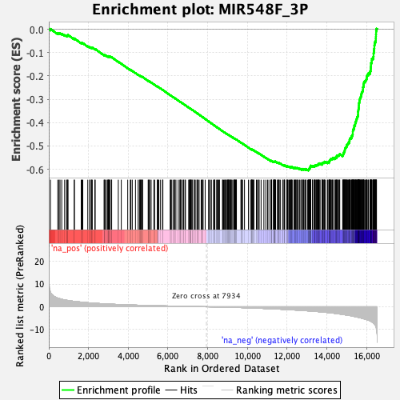
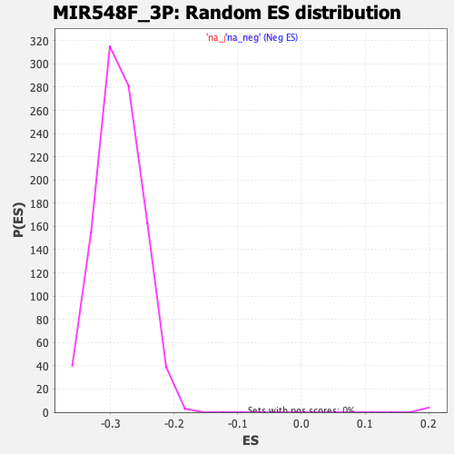

| | | Dataset | DE_genes2 |
| Phenotype | NoPhenotypeAvailable |
| Upregulated in class | na_neg |
| GeneSet | MIR548F_3P |
| Enrichment Score (ES) | -0.6054686 |
| Normalized Enrichment Score (NES) | -2.113037 |
| Nominal p-value | 0.0 |
| FDR q-value | 0.0 |
| FWER p-Value | 0.0 |
Table: GSEA Results Summary

Fig 1: Enrichment plot: MIR548F_3P
Profile of the Running ES Score & Positions of GeneSet Members on the Rank Ordered List
| PROBE | GENE SYMBOL | GENE_TITLE | RANK IN GENE LIST | RANK METRIC SCORE | RUNNING ES | CORE ENRICHMENT | | 1 | KDELR3 | | | 84 | 6.421 | 0.0012 | No |
| 2 | PCBP4 | | | 452 | 3.828 | -0.0178 | No |
| 3 | TMED4 | | | 512 | 3.674 | -0.0178 | No |
| 4 | GNB2 | | | 565 | 3.516 | -0.0176 | No |
| 5 | GPR137B | | | 651 | 3.304 | -0.0195 | No |
| 6 | TSPAN2 | | | 797 | 3.054 | -0.0255 | No |
| 7 | PI4KB | | | 891 | 2.872 | -0.0284 | No |
| 8 | NUAK1 | | | 924 | 2.839 | -0.0276 | No |
| 9 | SOX9 | | | 959 | 2.783 | -0.0269 | No |
| 10 | EZR | | | 962 | 2.778 | -0.0243 | No |
| 11 | CSK | | | 1283 | 2.375 | -0.0418 | No |
| 12 | RGS3 | | | 1285 | 2.373 | -0.0395 | No |
| 13 | ATRNL1 | | | 1632 | 2.059 | -0.0589 | No |
| 14 | GNS | | | 1670 | 2.020 | -0.0592 | No |
| 15 | SLC26A4 | | | 1712 | 1.981 | -0.0598 | No |
| 16 | MAP4 | | | 1962 | 1.785 | -0.0735 | No |
| 17 | ALKBH5 | | | 2060 | 1.713 | -0.0778 | No |
| 18 | LTBP1 | | | 2079 | 1.697 | -0.0772 | No |
| 19 | TP53BP1 | | | 2146 | 1.651 | -0.0797 | No |
| 20 | MMP2 | | | 2163 | 1.641 | -0.0790 | No |
| 21 | CCL28 | | | 2188 | 1.629 | -0.0789 | No |
| 22 | TM9SF2 | | | 2320 | 1.550 | -0.0855 | No |
| 23 | WDTC1 | | | 2335 | 1.539 | -0.0848 | No |
| 24 | CTTNBP2 | | | 2782 | 1.296 | -0.1112 | No |
| 25 | CHST14 | | | 2816 | 1.278 | -0.1120 | No |
| 26 | GPC4 | | | 2817 | 1.278 | -0.1108 | No |
| 27 | PGM2L1 | | | 2891 | 1.246 | -0.1140 | No |
| 28 | NEURL3 | | | 2954 | 1.213 | -0.1167 | No |
| 29 | PBX2 | | | 2988 | 1.201 | -0.1175 | No |
| 30 | ACYP2 | | | 2994 | 1.198 | -0.1167 | No |
| 31 | PLEKHB2 | | | 2996 | 1.198 | -0.1155 | No |
| 32 | MEX3D | | | 3052 | 1.174 | -0.1178 | No |
| 33 | MMAB | | | 3068 | 1.167 | -0.1175 | No |
| 34 | N4BP2L1 | | | 3070 | 1.167 | -0.1165 | No |
| 35 | CD47 | | | 3151 | 1.131 | -0.1203 | No |
| 36 | ADPRH | | | 3165 | 1.126 | -0.1200 | No |
| 37 | ATL1 | | | 3498 | 1.006 | -0.1396 | No |
| 38 | C3orf70 | | | 3650 | 0.951 | -0.1480 | No |
| 39 | CNTNAP2 | | | 3973 | 0.845 | -0.1672 | No |
| 40 | KAZN | | | 4100 | 0.808 | -0.1742 | No |
| 41 | DSC2 | | | 4132 | 0.799 | -0.1753 | No |
| 42 | KMT2D | | | 4202 | 0.779 | -0.1788 | No |
| 43 | ACKR3 | | | 4364 | 0.730 | -0.1881 | No |
| 44 | VASP | | | 4497 | 0.694 | -0.1956 | No |
| 45 | FLI1 | | | 4564 | 0.673 | -0.1990 | No |
| 46 | FZD4 | | | 4592 | 0.663 | -0.2000 | No |
| 47 | PCGF3 | | | 4608 | 0.661 | -0.2003 | No |
| 48 | SLC6A11 | | | 4662 | 0.647 | -0.2030 | No |
| 49 | ZNF229 | | | 4663 | 0.647 | -0.2023 | No |
| 50 | PCBP1 | | | 4711 | 0.635 | -0.2046 | No |
| 51 | DKK3 | | | 4724 | 0.631 | -0.2047 | No |
| 52 | AMPH | | | 5003 | 0.570 | -0.2214 | No |
| 53 | ADAMTS5 | | | 5023 | 0.565 | -0.2220 | No |
| 54 | BBS5 | | | 5072 | 0.552 | -0.2245 | No |
| 55 | RAB31 | | | 5075 | 0.551 | -0.2240 | No |
| 56 | CELSR1 | | | 5152 | 0.529 | -0.2282 | No |
| 57 | FAM149B1 | | | 5288 | 0.494 | -0.2361 | No |
| 58 | ZNF264 | | | 5328 | 0.486 | -0.2381 | No |
| 59 | MECP2 | | | 5467 | 0.457 | -0.2462 | No |
| 60 | TSTD2 | | | 5475 | 0.455 | -0.2461 | No |
| 61 | NR3C2 | | | 5498 | 0.450 | -0.2471 | No |
| 62 | ITGAV | | | 5541 | 0.441 | -0.2492 | No |
| 63 | RNF207 | | | 5625 | 0.421 | -0.2540 | No |
| 64 | PARP16 | | | 5729 | 0.399 | -0.2600 | No |
| 65 | LEPROT | | | 5743 | 0.395 | -0.2604 | No |
| 66 | CDC42BPB | | | 6110 | 0.324 | -0.2828 | No |
| 67 | MYO1B | | | 6143 | 0.317 | -0.2844 | No |
| 68 | ACVR1C | | | 6173 | 0.311 | -0.2859 | No |
| 69 | C12orf73 | | | 6253 | 0.293 | -0.2906 | No |
| 70 | PNPLA4 | | | 6321 | 0.282 | -0.2944 | No |
| 71 | CALB1 | | | 6341 | 0.277 | -0.2953 | No |
| 72 | MED28 | | | 6399 | 0.263 | -0.2986 | No |
| 73 | ATXN1 | | | 6516 | 0.241 | -0.3056 | No |
| 74 | PIK3R3 | | | 6598 | 0.223 | -0.3104 | No |
| 75 | CSDE1 | | | 6619 | 0.220 | -0.3114 | No |
| 76 | RAD23A | | | 6639 | 0.216 | -0.3124 | No |
| 77 | DSG2 | | | 6689 | 0.205 | -0.3152 | No |
| 78 | EHMT1 | | | 6768 | 0.190 | -0.3199 | No |
| 79 | ABHD6 | | | 6781 | 0.188 | -0.3204 | No |
| 80 | G3BP2 | | | 6854 | 0.177 | -0.3247 | No |
| 81 | MAFB | | | 6880 | 0.174 | -0.3261 | No |
| 82 | HERC1 | | | 7045 | 0.147 | -0.3361 | No |
| 83 | DYNC1LI2 | | | 7060 | 0.143 | -0.3368 | No |
| 84 | RNF14 | | | 7103 | 0.134 | -0.3393 | No |
| 85 | SRCIN1 | | | 7106 | 0.133 | -0.3393 | No |
| 86 | MPZL2 | | | 7138 | 0.127 | -0.3411 | No |
| 87 | FOXO3 | | | 7160 | 0.123 | -0.3423 | No |
| 88 | FTO | | | 7165 | 0.122 | -0.3424 | No |
| 89 | SLC44A5 | | | 7214 | 0.114 | -0.3453 | No |
| 90 | ATF7IP2 | | | 7216 | 0.113 | -0.3452 | No |
| 91 | RAPGEF5 | | | 7315 | 0.095 | -0.3512 | No |
| 92 | INHBB | | | 7323 | 0.093 | -0.3516 | No |
| 93 | ADAMTSL3 | | | 7374 | 0.084 | -0.3546 | No |
| 94 | MCC | | | 7462 | 0.072 | -0.3599 | No |
| 95 | TRAPPC1 | | | 7465 | 0.071 | -0.3600 | No |
| 96 | GFRA1 | | | 7525 | 0.060 | -0.3636 | No |
| 97 | CXXC4 | | | 7567 | 0.054 | -0.3661 | No |
| 98 | TP53INP1 | | | 7669 | 0.038 | -0.3723 | No |
| 99 | DIDO1 | | | 7718 | 0.029 | -0.3752 | No |
| 100 | ELAVL1 | | | 7729 | 0.028 | -0.3758 | No |
| 101 | RNF19A | | | 7769 | 0.022 | -0.3782 | No |
| 102 | DMD | | | 7872 | 0.008 | -0.3846 | No |
| 103 | GPR85 | | | 8048 | -0.019 | -0.3954 | No |
| 104 | NNT | | | 8061 | -0.021 | -0.3961 | No |
| 105 | TCF20 | | | 8134 | -0.031 | -0.4006 | No |
| 106 | IKZF2 | | | 8186 | -0.040 | -0.4037 | No |
| 107 | USP31 | | | 8292 | -0.054 | -0.4102 | No |
| 108 | GTF2IRD2 | | | 8325 | -0.061 | -0.4121 | No |
| 109 | BMPR2 | | | 8353 | -0.067 | -0.4137 | No |
| 110 | PIGN | | | 8359 | -0.068 | -0.4139 | No |
| 111 | ONECUT2 | | | 8448 | -0.084 | -0.4193 | No |
| 112 | CREB5 | | | 8488 | -0.090 | -0.4216 | No |
| 113 | ZNF91 | | | 8517 | -0.096 | -0.4233 | No |
| 114 | MACF1 | | | 8565 | -0.105 | -0.4261 | No |
| 115 | GADD45A | | | 8593 | -0.109 | -0.4277 | No |
| 116 | NTN4 | | | 8746 | -0.141 | -0.4370 | No |
| 117 | SV2B | | | 8754 | -0.143 | -0.4373 | No |
| 118 | RNF38 | | | 8801 | -0.151 | -0.4400 | No |
| 119 | MTF1 | | | 8848 | -0.161 | -0.4427 | No |
| 120 | TTC39B | | | 8866 | -0.163 | -0.4435 | No |
| 121 | SLCO4C1 | | | 8912 | -0.173 | -0.4462 | No |
| 122 | SLC4A4 | | | 8921 | -0.176 | -0.4465 | No |
| 123 | CDC14A | | | 8976 | -0.187 | -0.4497 | No |
| 124 | WDR47 | | | 8999 | -0.192 | -0.4508 | No |
| 125 | SERINC5 | | | 9018 | -0.196 | -0.4518 | No |
| 126 | RAB22A | | | 9032 | -0.200 | -0.4524 | No |
| 127 | MAP7 | | | 9054 | -0.205 | -0.4535 | No |
| 128 | ARL8B | | | 9063 | -0.206 | -0.4538 | No |
| 129 | TAB2 | | | 9096 | -0.214 | -0.4555 | No |
| 130 | KANSL1L | | | 9135 | -0.222 | -0.4577 | No |
| 131 | PEX13 | | | 9138 | -0.223 | -0.4576 | No |
| 132 | ATP2A2 | | | 9170 | -0.231 | -0.4593 | No |
| 133 | SESN3 | | | 9190 | -0.236 | -0.4602 | No |
| 134 | ARHGAP6 | | | 9229 | -0.249 | -0.4623 | No |
| 135 | TMEM169 | | | 9302 | -0.266 | -0.4665 | No |
| 136 | C7orf26 | | | 9333 | -0.272 | -0.4681 | No |
| 137 | ZNF681 | | | 9345 | -0.275 | -0.4685 | No |
| 138 | CAMTA1 | | | 9356 | -0.277 | -0.4689 | No |
| 139 | TET2 | | | 9359 | -0.278 | -0.4687 | No |
| 140 | MEX3C | | | 9404 | -0.289 | -0.4712 | No |
| 141 | TNRC18 | | | 9417 | -0.292 | -0.4716 | No |
| 142 | ZC3H12C | | | 9437 | -0.300 | -0.4725 | No |
| 143 | ZNF713 | | | 9446 | -0.302 | -0.4727 | No |
| 144 | MSI1 | | | 9671 | -0.361 | -0.4862 | No |
| 145 | ADH5 | | | 9689 | -0.365 | -0.4869 | No |
| 146 | EPC1 | | | 9714 | -0.373 | -0.4880 | No |
| 147 | PAK2 | | | 9756 | -0.387 | -0.4902 | No |
| 148 | SULT1C4 | | | 9852 | -0.416 | -0.4957 | No |
| 149 | SPINK7 | | | 10050 | -0.473 | -0.5075 | No |
| 150 | EIF1 | | | 10152 | -0.510 | -0.5132 | No |
| 151 | SERTAD2 | | | 10203 | -0.526 | -0.5158 | No |
| 152 | TBL1XR1 | | | 10213 | -0.529 | -0.5158 | No |
| 153 | FAM3C | | | 10221 | -0.531 | -0.5157 | No |
| 154 | TNRC6B | | | 10236 | -0.535 | -0.5161 | No |
| 155 | ZNF333 | | | 10240 | -0.536 | -0.5157 | No |
| 156 | FNIP2 | | | 10280 | -0.547 | -0.5176 | No |
| 157 | HACD3 | | | 10313 | -0.559 | -0.5190 | No |
| 158 | PCDH7 | | | 10320 | -0.560 | -0.5188 | No |
| 159 | HNRNPUL2 | | | 10450 | -0.602 | -0.5263 | No |
| 160 | PIAS1 | | | 10501 | -0.624 | -0.5287 | No |
| 161 | MEF2A | | | 10558 | -0.648 | -0.5316 | No |
| 162 | RSBN1 | | | 10590 | -0.660 | -0.5328 | No |
| 163 | DGKH | | | 10687 | -0.688 | -0.5381 | No |
| 164 | CCNYL1 | | | 10827 | -0.737 | -0.5460 | No |
| 165 | SMAD4 | | | 10926 | -0.775 | -0.5513 | No |
| 166 | STK39 | | | 11013 | -0.807 | -0.5559 | No |
| 167 | PLCH1 | | | 11080 | -0.835 | -0.5591 | No |
| 168 | CDCA4 | | | 11178 | -0.873 | -0.5643 | No |
| 169 | RNPS1 | | | 11199 | -0.881 | -0.5646 | No |
| 170 | SLC1A3 | | | 11214 | -0.887 | -0.5646 | No |
| 171 | PCBP2 | | | 11220 | -0.891 | -0.5641 | No |
| 172 | UBR2 | | | 11308 | -0.929 | -0.5685 | No |
| 173 | BTF3 | | | 11327 | -0.937 | -0.5687 | No |
| 174 | RAPH1 | | | 11331 | -0.940 | -0.5680 | No |
| 175 | ATXN7 | | | 11357 | -0.952 | -0.5686 | No |
| 176 | RNF2 | | | 11364 | -0.953 | -0.5680 | No |
| 177 | PAG1 | | | 11370 | -0.957 | -0.5674 | No |
| 178 | UGGT1 | | | 11390 | -0.964 | -0.5676 | No |
| 179 | ZBTB14 | | | 11394 | -0.966 | -0.5668 | No |
| 180 | TFRC | | | 11418 | -0.977 | -0.5673 | No |
| 181 | C18orf25 | | | 11511 | -1.009 | -0.5720 | No |
| 182 | CCDC186 | | | 11523 | -1.014 | -0.5716 | No |
| 183 | NFAT5 | | | 11568 | -1.034 | -0.5734 | No |
| 184 | FAM76A | | | 11589 | -1.041 | -0.5736 | No |
| 185 | GALNT1 | | | 11599 | -1.045 | -0.5731 | No |
| 186 | ARHGAP21 | | | 11665 | -1.074 | -0.5760 | No |
| 187 | CDYL | | | 11784 | -1.123 | -0.5823 | No |
| 188 | PAIP1 | | | 11796 | -1.132 | -0.5818 | No |
| 189 | VPS37A | | | 11853 | -1.154 | -0.5841 | No |
| 190 | TPBG | | | 11859 | -1.158 | -0.5833 | No |
| 191 | CNTN4 | | | 11878 | -1.165 | -0.5833 | No |
| 192 | INO80D | | | 11983 | -1.212 | -0.5885 | No |
| 193 | PPM1D | | | 11988 | -1.215 | -0.5876 | No |
| 194 | RAB27B | | | 12010 | -1.225 | -0.5876 | No |
| 195 | BEX2 | | | 12019 | -1.231 | -0.5869 | No |
| 196 | MED4 | | | 12075 | -1.260 | -0.5891 | No |
| 197 | SPIRE1 | | | 12105 | -1.274 | -0.5896 | No |
| 198 | ZFHX4 | | | 12145 | -1.300 | -0.5907 | No |
| 199 | ZFYVE28 | | | 12177 | -1.318 | -0.5913 | No |
| 200 | DNAJC27 | | | 12199 | -1.324 | -0.5913 | No |
| 201 | SKIL | | | 12213 | -1.332 | -0.5908 | No |
| 202 | POU4F1 | | | 12231 | -1.341 | -0.5905 | No |
| 203 | JAKMIP3 | | | 12254 | -1.353 | -0.5906 | No |
| 204 | ZEB1 | | | 12339 | -1.396 | -0.5944 | No |
| 205 | CALM1 | | | 12367 | -1.411 | -0.5947 | No |
| 206 | SOWAHC | | | 12392 | -1.422 | -0.5947 | No |
| 207 | ACVR2B | | | 12411 | -1.429 | -0.5944 | No |
| 208 | BRWD1 | | | 12432 | -1.441 | -0.5942 | No |
| 209 | BCOR | | | 12480 | -1.467 | -0.5957 | No |
| 210 | TMEM33 | | | 12494 | -1.473 | -0.5950 | No |
| 211 | KANSL1 | | | 12510 | -1.477 | -0.5945 | No |
| 212 | VEZT | | | 12563 | -1.511 | -0.5962 | No |
| 213 | SAMD8 | | | 12617 | -1.542 | -0.5980 | No |
| 214 | PDE7B | | | 12646 | -1.560 | -0.5982 | No |
| 215 | NUDT12 | | | 12727 | -1.602 | -0.6015 | No |
| 216 | KLF9 | | | 12742 | -1.609 | -0.6008 | No |
| 217 | CDK13 | | | 12756 | -1.619 | -0.6000 | No |
| 218 | BRWD3 | | | 12760 | -1.622 | -0.5986 | No |
| 219 | CDK6 | | | 12820 | -1.666 | -0.6006 | No |
| 220 | HACE1 | | | 12823 | -1.668 | -0.5991 | No |
| 221 | SDE2 | | | 12851 | -1.688 | -0.5991 | No |
| 222 | PDE10A | | | 12923 | -1.729 | -0.6017 | No |
| 223 | PTPN12 | | | 12931 | -1.734 | -0.6005 | No |
| 224 | B3GLCT | | | 12932 | -1.734 | -0.5987 | No |
| 225 | ENOPH1 | | | 13024 | -1.783 | -0.6026 | No |
| 226 | XRN2 | | | 13071 | -1.812 | -0.6037 | Yes |
| 227 | ADAM22 | | | 13074 | -1.813 | -0.6020 | Yes |
| 228 | GEMIN5 | | | 13079 | -1.816 | -0.6004 | Yes |
| 229 | CNOT6L | | | 13089 | -1.820 | -0.5992 | Yes |
| 230 | ARL6IP1 | | | 13098 | -1.824 | -0.5979 | Yes |
| 231 | GABPB1 | | | 13127 | -1.841 | -0.5978 | Yes |
| 232 | FOXJ3 | | | 13129 | -1.842 | -0.5960 | Yes |
| 233 | PRRC1 | | | 13143 | -1.853 | -0.5950 | Yes |
| 234 | ALS2 | | | 13154 | -1.862 | -0.5937 | Yes |
| 235 | UBE2G1 | | | 13158 | -1.867 | -0.5921 | Yes |
| 236 | SMNDC1 | | | 13163 | -1.869 | -0.5905 | Yes |
| 237 | PCLO | | | 13170 | -1.872 | -0.5890 | Yes |
| 238 | PIK3R1 | | | 13173 | -1.874 | -0.5872 | Yes |
| 239 | TRUB1 | | | 13181 | -1.880 | -0.5858 | Yes |
| 240 | TET1 | | | 13190 | -1.885 | -0.5844 | Yes |
| 241 | PIP4K2A | | | 13272 | -1.937 | -0.5875 | Yes |
| 242 | STAM2 | | | 13274 | -1.938 | -0.5857 | Yes |
| 243 | USP33 | | | 13342 | -1.982 | -0.5878 | Yes |
| 244 | CNEP1R1 | | | 13372 | -2.010 | -0.5877 | Yes |
| 245 | DR1 | | | 13391 | -2.021 | -0.5868 | Yes |
| 246 | TBP | | | 13392 | -2.021 | -0.5847 | Yes |
| 247 | PIK3CB | | | 13409 | -2.030 | -0.5837 | Yes |
| 248 | KLHL28 | | | 13452 | -2.071 | -0.5843 | Yes |
| 249 | USP38 | | | 13462 | -2.074 | -0.5828 | Yes |
| 250 | EVI5 | | | 13493 | -2.097 | -0.5825 | Yes |
| 251 | ZPLD1 | | | 13506 | -2.099 | -0.5812 | Yes |
| 252 | FBXW7 | | | 13543 | -2.127 | -0.5813 | Yes |
| 253 | MYEF2 | | | 13560 | -2.139 | -0.5802 | Yes |
| 254 | ZNF484 | | | 13573 | -2.144 | -0.5788 | Yes |
| 255 | ZBTB44 | | | 13586 | -2.156 | -0.5774 | Yes |
| 256 | SPIN4 | | | 13591 | -2.158 | -0.5755 | Yes |
| 257 | ATF2 | | | 13648 | -2.197 | -0.5768 | Yes |
| 258 | C8orf37 | | | 13651 | -2.198 | -0.5747 | Yes |
| 259 | WASF1 | | | 13752 | -2.284 | -0.5787 | Yes |
| 260 | CHCHD7 | | | 13756 | -2.290 | -0.5766 | Yes |
| 261 | RPP30 | | | 13760 | -2.292 | -0.5745 | Yes |
| 262 | LATS1 | | | 13781 | -2.313 | -0.5734 | Yes |
| 263 | FBXO22 | | | 13803 | -2.333 | -0.5724 | Yes |
| 264 | TTPA | | | 13823 | -2.349 | -0.5713 | Yes |
| 265 | PTEN | | | 13864 | -2.381 | -0.5714 | Yes |
| 266 | TMEM245 | | | 13878 | -2.396 | -0.5698 | Yes |
| 267 | ZNF658 | | | 13883 | -2.402 | -0.5677 | Yes |
| 268 | COX15 | | | 13934 | -2.440 | -0.5684 | Yes |
| 269 | NF1 | | | 14030 | -2.526 | -0.5717 | Yes |
| 270 | ZNF711 | | | 14050 | -2.551 | -0.5704 | Yes |
| 271 | USP48 | | | 14105 | -2.600 | -0.5711 | Yes |
| 272 | CLASP2 | | | 14107 | -2.602 | -0.5686 | Yes |
| 273 | SPOPL | | | 14119 | -2.613 | -0.5667 | Yes |
| 274 | FERMT2 | | | 14129 | -2.621 | -0.5647 | Yes |
| 275 | VPS13C | | | 14138 | -2.631 | -0.5625 | Yes |
| 276 | ZFAND4 | | | 14153 | -2.648 | -0.5608 | Yes |
| 277 | ZNF260 | | | 14174 | -2.665 | -0.5594 | Yes |
| 278 | ESYT2 | | | 14180 | -2.670 | -0.5570 | Yes |
| 279 | ZNF275 | | | 14213 | -2.703 | -0.5563 | Yes |
| 280 | ZMYND19 | | | 14251 | -2.742 | -0.5559 | Yes |
| 281 | ARPP19 | | | 14285 | -2.770 | -0.5552 | Yes |
| 282 | KBTBD8 | | | 14301 | -2.783 | -0.5534 | Yes |
| 283 | TDG | | | 14303 | -2.783 | -0.5507 | Yes |
| 284 | FZD3 | | | 14403 | -2.879 | -0.5539 | Yes |
| 285 | PIKFYVE | | | 14427 | -2.913 | -0.5525 | Yes |
| 286 | SLC25A24 | | | 14428 | -2.913 | -0.5496 | Yes |
| 287 | SNRPD1 | | | 14482 | -2.970 | -0.5499 | Yes |
| 288 | HECTD2 | | | 14493 | -2.983 | -0.5476 | Yes |
| 289 | RNF168 | | | 14496 | -2.985 | -0.5447 | Yes |
| 290 | RUFY2 | | | 14499 | -2.986 | -0.5419 | Yes |
| 291 | ZCCHC10 | | | 14537 | -3.034 | -0.5412 | Yes |
| 292 | ZDBF2 | | | 14576 | -3.079 | -0.5405 | Yes |
| 293 | SPATA5 | | | 14616 | -3.131 | -0.5398 | Yes |
| 294 | PPM1B | | | 14621 | -3.139 | -0.5369 | Yes |
| 295 | VMA21 | | | 14647 | -3.181 | -0.5353 | Yes |
| 296 | ZBTB20 | | | 14794 | -3.351 | -0.5410 | Yes |
| 297 | WDR17 | | | 14806 | -3.369 | -0.5383 | Yes |
| 298 | ZNF281 | | | 14824 | -3.391 | -0.5360 | Yes |
| 299 | SCAI | | | 14827 | -3.393 | -0.5328 | Yes |
| 300 | ENTPD1 | | | 14836 | -3.404 | -0.5299 | Yes |
| 301 | MAP3K2 | | | 14856 | -3.434 | -0.5277 | Yes |
| 302 | STRBP | | | 14867 | -3.445 | -0.5249 | Yes |
| 303 | PCNA | | | 14896 | -3.501 | -0.5231 | Yes |
| 304 | HLF | | | 14898 | -3.504 | -0.5197 | Yes |
| 305 | GEMIN2 | | | 14903 | -3.507 | -0.5165 | Yes |
| 306 | SLC25A36 | | | 14908 | -3.515 | -0.5132 | Yes |
| 307 | TAF9B | | | 14914 | -3.528 | -0.5100 | Yes |
| 308 | SUB1 | | | 14937 | -3.561 | -0.5078 | Yes |
| 309 | IKBIP | | | 14953 | -3.574 | -0.5052 | Yes |
| 310 | CPNE3 | | | 14985 | -3.622 | -0.5035 | Yes |
| 311 | TEAD1 | | | 14994 | -3.642 | -0.5004 | Yes |
| 312 | GPAM | | | 14995 | -3.645 | -0.4968 | Yes |
| 313 | SOCS6 | | | 15011 | -3.662 | -0.4941 | Yes |
| 314 | ATXN3 | | | 15046 | -3.713 | -0.4925 | Yes |
| 315 | ZYG11B | | | 15069 | -3.746 | -0.4901 | Yes |
| 316 | CSTF3 | | | 15075 | -3.760 | -0.4867 | Yes |
| 317 | NAV3 | | | 15117 | -3.804 | -0.4855 | Yes |
| 318 | DDX3X | | | 15126 | -3.818 | -0.4822 | Yes |
| 319 | HERC4 | | | 15133 | -3.824 | -0.4788 | Yes |
| 320 | TXNRD1 | | | 15142 | -3.835 | -0.4754 | Yes |
| 321 | MSL2 | | | 15144 | -3.836 | -0.4717 | Yes |
| 322 | MYO5A | | | 15158 | -3.859 | -0.4687 | Yes |
| 323 | PLAGL1 | | | 15185 | -3.897 | -0.4664 | Yes |
| 324 | TMED7 | | | 15231 | -3.969 | -0.4653 | Yes |
| 325 | CNBP | | | 15236 | -3.977 | -0.4615 | Yes |
| 326 | ZFR | | | 15239 | -3.983 | -0.4577 | Yes |
| 327 | DENND4C | | | 15277 | -4.075 | -0.4560 | Yes |
| 328 | SLC2A13 | | | 15290 | -4.097 | -0.4526 | Yes |
| 329 | RPGRIP1L | | | 15300 | -4.114 | -0.4491 | Yes |
| 330 | PTBP2 | | | 15303 | -4.117 | -0.4451 | Yes |
| 331 | SPRED1 | | | 15304 | -4.118 | -0.4410 | Yes |
| 332 | SRSF11 | | | 15306 | -4.125 | -0.4370 | Yes |
| 333 | TNPO1 | | | 15312 | -4.132 | -0.4332 | Yes |
| 334 | ZNF280C | | | 15317 | -4.147 | -0.4293 | Yes |
| 335 | PPP3R1 | | | 15351 | -4.210 | -0.4272 | Yes |
| 336 | EIF4E | | | 15357 | -4.217 | -0.4233 | Yes |
| 337 | REST | | | 15375 | -4.253 | -0.4201 | Yes |
| 338 | ELK4 | | | 15379 | -4.257 | -0.4161 | Yes |
| 339 | KLHL15 | | | 15382 | -4.261 | -0.4120 | Yes |
| 340 | MTX3 | | | 15421 | -4.346 | -0.4100 | Yes |
| 341 | IFT81 | | | 15424 | -4.348 | -0.4058 | Yes |
| 342 | CUL3 | | | 15431 | -4.357 | -0.4019 | Yes |
| 343 | GKAP1 | | | 15449 | -4.388 | -0.3986 | Yes |
| 344 | PURB | | | 15457 | -4.400 | -0.3946 | Yes |
| 345 | XPO4 | | | 15472 | -4.434 | -0.3911 | Yes |
| 346 | TRAPPC8 | | | 15475 | -4.438 | -0.3868 | Yes |
| 347 | ZNF148 | | | 15504 | -4.490 | -0.3841 | Yes |
| 348 | CEP85L | | | 15512 | -4.508 | -0.3800 | Yes |
| 349 | IREB2 | | | 15518 | -4.519 | -0.3758 | Yes |
| 350 | ZFHX3 | | | 15548 | -4.579 | -0.3731 | Yes |
| 351 | ZNF569 | | | 15561 | -4.611 | -0.3692 | Yes |
| 352 | NEK7 | | | 15567 | -4.627 | -0.3650 | Yes |
| 353 | TMED5 | | | 15569 | -4.630 | -0.3604 | Yes |
| 354 | STXBP5 | | | 15570 | -4.632 | -0.3558 | Yes |
| 355 | ARID4A | | | 15573 | -4.640 | -0.3513 | Yes |
| 356 | ZFX | | | 15584 | -4.668 | -0.3473 | Yes |
| 357 | TRMT5 | | | 15589 | -4.679 | -0.3429 | Yes |
| 358 | ATRX | | | 15599 | -4.719 | -0.3388 | Yes |
| 359 | EDEM3 | | | 15604 | -4.731 | -0.3343 | Yes |
| 360 | PAPOLA | | | 15608 | -4.738 | -0.3298 | Yes |
| 361 | PHIP | | | 15609 | -4.738 | -0.3251 | Yes |
| 362 | PTBP3 | | | 15614 | -4.752 | -0.3206 | Yes |
| 363 | MOB1B | | | 15615 | -4.752 | -0.3159 | Yes |
| 364 | ZBTB41 | | | 15635 | -4.784 | -0.3123 | Yes |
| 365 | MFAP3L | | | 15636 | -4.786 | -0.3075 | Yes |
| 366 | QKI | | | 15650 | -4.807 | -0.3036 | Yes |
| 367 | C1orf131 | | | 15658 | -4.833 | -0.2992 | Yes |
| 368 | PPP6R3 | | | 15674 | -4.860 | -0.2953 | Yes |
| 369 | LUC7L2 | | | 15689 | -4.884 | -0.2913 | Yes |
| 370 | MTPAP | | | 15712 | -4.937 | -0.2878 | Yes |
| 371 | TAOK1 | | | 15719 | -4.945 | -0.2832 | Yes |
| 372 | ANKRD11 | | | 15730 | -4.962 | -0.2789 | Yes |
| 373 | TRMT10A | | | 15746 | -5.005 | -0.2749 | Yes |
| 374 | PDS5B | | | 15754 | -5.018 | -0.2703 | Yes |
| 375 | DDHD1 | | | 15784 | -5.083 | -0.2671 | Yes |
| 376 | LPP | | | 15802 | -5.131 | -0.2630 | Yes |
| 377 | ATP11C | | | 15815 | -5.171 | -0.2586 | Yes |
| 378 | ZDHHC21 | | | 15817 | -5.173 | -0.2536 | Yes |
| 379 | PCGF5 | | | 15818 | -5.180 | -0.2484 | Yes |
| 380 | GPR63 | | | 15840 | -5.243 | -0.2445 | Yes |
| 381 | B4GALT6 | | | 15848 | -5.258 | -0.2397 | Yes |
| 382 | NHLRC2 | | | 15851 | -5.267 | -0.2346 | Yes |
| 383 | ETNK1 | | | 15864 | -5.301 | -0.2301 | Yes |
| 384 | RPS6KB1 | | | 15871 | -5.313 | -0.2252 | Yes |
| 385 | ANGEL2 | | | 15917 | -5.437 | -0.2225 | Yes |
| 386 | OSBPL8 | | | 15950 | -5.507 | -0.2191 | Yes |
| 387 | HLTF | | | 15978 | -5.593 | -0.2152 | Yes |
| 388 | TPR | | | 16001 | -5.664 | -0.2109 | Yes |
| 389 | SP3 | | | 16006 | -5.687 | -0.2055 | Yes |
| 390 | DTD2 | | | 16010 | -5.699 | -0.2000 | Yes |
| 391 | PHC3 | | | 16035 | -5.790 | -0.1958 | Yes |
| 392 | CPNE8 | | | 16088 | -5.924 | -0.1931 | Yes |
| 393 | SCML1 | | | 16097 | -5.951 | -0.1877 | Yes |
| 394 | SEC62 | | | 16172 | -6.217 | -0.1861 | Yes |
| 395 | MIER3 | | | 16176 | -6.252 | -0.1801 | Yes |
| 396 | ADAM10 | | | 16203 | -6.331 | -0.1754 | Yes |
| 397 | GTF2A1 | | | 16206 | -6.350 | -0.1692 | Yes |
| 398 | CENPH | | | 16211 | -6.387 | -0.1631 | Yes |
| 399 | PHF3 | | | 16217 | -6.419 | -0.1570 | Yes |
| 400 | RAD51AP1 | | | 16221 | -6.439 | -0.1508 | Yes |
| 401 | MPHOSPH9 | | | 16223 | -6.445 | -0.1445 | Yes |
| 402 | THUMPD1 | | | 16258 | -6.587 | -0.1400 | Yes |
| 403 | NEMF | | | 16259 | -6.597 | -0.1335 | Yes |
| 404 | IPMK | | | 16262 | -6.640 | -0.1270 | Yes |
| 405 | PMS1 | | | 16317 | -6.967 | -0.1234 | Yes |
| 406 | SREK1 | | | 16340 | -7.129 | -0.1177 | Yes |
| 407 | PSIP1 | | | 16348 | -7.206 | -0.1110 | Yes |
| 408 | KIF2A | | | 16349 | -7.214 | -0.1038 | Yes |
| 409 | SMAD5 | | | 16361 | -7.268 | -0.0973 | Yes |
| 410 | U2SURP | | | 16370 | -7.372 | -0.0904 | Yes |
| 411 | OTUD6B | | | 16379 | -7.456 | -0.0835 | Yes |
| 412 | PHF6 | | | 16388 | -7.593 | -0.0765 | Yes |
| 413 | UTP23 | | | 16390 | -7.609 | -0.0690 | Yes |
| 414 | PHF20L1 | | | 16403 | -7.776 | -0.0620 | Yes |
| 415 | TRPM7 | | | 16414 | -7.910 | -0.0547 | Yes |
| 416 | CNTN1 | | | 16457 | -8.479 | -0.0489 | Yes |
| 417 | TGFBR3 | | | 16462 | -8.531 | -0.0407 | Yes |
| 418 | CCAR1 | | | 16466 | -8.599 | -0.0323 | Yes |
| 419 | LYRM7 | | | 16470 | -8.672 | -0.0239 | Yes |
| 420 | TOP2B | | | 16475 | -8.798 | -0.0154 | Yes |
| 421 | SERBP1 | | | 16478 | -8.980 | -0.0066 | Yes |
| 422 | TOP2A | | | 16497 | -9.873 | 0.0021 | Yes |
Table: GSEA details [plain text format]

Fig 2: MIR548F_3P: Random ES distribution
Gene set null distribution of ES for MIR548F_3P